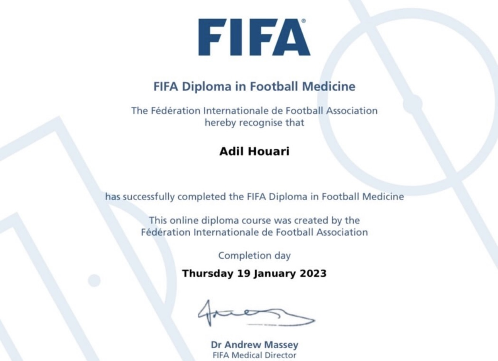

Dr Adil HOUARI – Médecin généraliste à Bouskoura & Ville Verte
Médecin généraliste, spécialiste en médecine du sport et compétence en allergologie. Cabinet médical à Bouskoura & Ville Verte, Casablanca.
Parcours & formation
Biographie
Dr Adil HOUARI est docteur en médecine, diplômé de l'Université de Bordeaux en 2022, installé à Bouskoura & Ville Verte, Casablanca depuis janvier 2026.
En allergologie, il a suivi une formation et des stages cliniques à l'Hôpital Necker à Paris, ce qui lui permet de réaliser des bilans allergologiques complets et des prick tests au cabinet.
Passionné par la médecine du sport, il a obtenu un diplôme universitaire de médecine du sport de l'Université de Bordeaux, le FIFA Diploma in Football Medicine (janvier 2023), et a été reconnu spécialiste en médecine du sport par le Conseil National de l'Ordre des Médecins en décembre 2025. Cette qualification lui permet d'assurer le suivi médical des sportifs — amateurs, licenciés et de haut niveau — qu'il s'agisse de bilans d'aptitude, de prise en charge des blessures sportives ou d'accompagnement à la performance.
Diplômes & formations
-
🎓 Diplôme de Docteur en Médecine
Faculté de Médecine de Casablanca — 2001 -
🌿 Formation en Allergologie
Stages cliniques — Hôpital Necker, Paris — 2004 -
🏃 Diplôme universitaire de Médecine du Sport
Université de Bordeaux — 2022 -
⚽ FIFA Diploma in Football Medicine
Fédération Internationale de Football Association — janvier 2023
- Qualifié en tant que Spécialiste en Médecine du Sport par le Conseil National de l'Ordre des Médecins — déc. 2025
Langues
Français · Arabe · Darija
Domaines de compétence
Médecine générale & suivi familial
Consultations pour toute la famille, du nourrisson à la personne âgée. Suivi des maladies chroniques, certificats médicaux, vaccinations, visites à domicile selon disponibilité.
Allergologie & prick tests
Bilan allergologique complet : rhinite, asthme, urticaire, eczéma, allergie alimentaire. Prick tests réalisés au cabinet, résultat en séance. Formation à l'Hôpital Necker, Paris.
Médecine du sport
Suivi médical des sportifs amateurs, licenciés et de haut niveau. Bilans d'aptitude sportive, prise en charge des blessures, accompagnement à la performance. Spécialiste reconnu par le CNOM (déc. 2025).
Visites médicales & certificats
Visite médicale pour le permis de conduire (médecin agréé), certificats d'aptitude sportive, certificats médicaux divers.
Prendre rendez-vous
Par téléphone ou via le formulaire ci-dessous.
- Lun – Ven
- 09:30 – 13:00 & 16:00 – 20:00
- Samedi
- 09:30 – 13:00
- Dimanche
- Fermé